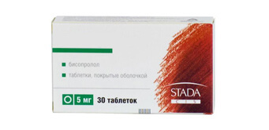

Аптечный беспредел в г. или как жадные аптекари скрывали самый продаваемый в Европе препарат от гипертонии, стоимостью 599 тенге
Уже 2 года на европейском рынке присутствует чудо-препарат для лечения гипертонии и повышенного давления – капли GIPERTOX. По эффективности он в несколько раз превосходит аналоги – дает не только быстрый эффект после начала применения, но и восстанавливает естественные функции организма, при этом не имеет побочных эффектов.
Специально для сравнения двух препаратов мы приводим таблицу:
GIPERTOX |
 Аптечные средства |
|
|---|---|---|
| Цена: | Акционная цена - 599 тенге | 6250-23720 тенге |
| Действие: | Улучшение работы сердца и венозного оттока, очищение сосудов от шлаков | Временное предупреждение внезапной остановки сердца |
| Дополнительные эффекты: |
º расщепление тромбов º укрепление стенок сосудов |
Отсутствуют |
| Побочные эффекты, вред для организма: |
Отсутствуют | º бронхоспазм; º снижение глюкозы в крови º сужение сосудов º обострение «бронхита курильщиков» º снижение потенции º депрессия, бессонница º брадикардия º синдром Рейно |
| Принцип работы: | Нормализует давление в первые 6 часов, благодаря биофлавоноиду. Комплексное оздоровление. Устранение стенокардии, аритмии, неврозов, улучшение памяти, восстановление речи и движения после инсультов. | Даёт временный блокирующий эффект, часто вызывая опасные побочные эффекты |
| Состав: | Натуральные растительные компоненты и витамины | Компоненты, полученные химическим путем |
| Место в рейтинге продаж в Европе за 1 квартал 2017 г: | 1 (+53) | 2 (-1) |
Препарат воздействует на причину заболевания, благодаря чему появляется возможность полностью избавиться от гипертонии. Убирает симптоматику и вовсе в первые шесть часов после применения, за счет своего активного компонента. Это даёт возможность уже сразу после начала курса, что называется, вздохнуть полной грудью.
Тонус сосудов полностью восстанавливается после одного курса применения. При этом GIPERTOX эффективен на любой стадии гипертонии. Лекарство естественно прошло клинические испытания. Следует отметить, что эффективность, продемонстрированная в процессе испытаний, даст фору любому зарубежному препарату. Лучший результат у западных лекарств - 20-21% вылеченных, в нашем случае, речь идёт о 75-77%. У всех остальных ситуация просто стабилизируется, то есть сама гипертония в зачаточном состоянии сохраняется (проблема с тонусом сосудов), но при этом у вас не скачет давление, и чувствуете вы себя просто великолепно.
Практически сразу после появления на рынке GIPERTOX превзошел аналоги по всем показателям и сегодня является самым полезным, эффективным и продаваемым препаратом для лечения гипертонии.
А что происходит в Казахстане?
GIPERTOX до сих пор не представлен в казахских аптеках (и скорее всего, не будет). И это при том, что он с успехом прошел и казахские клинические испытания в лаборатории и на него получены все необходимые сертификаты. Почему так обстоят дела с этим уникальным препаратом?
Мы взяли интервью у одного из владельцев крупной аптечной сети г. – Надира Газизовича Нурпеисова и вот, что он ответил. Это уму непостижимо!
- Надир Газизович, как вы прокомментируете то, что известный в Европе препарат до сих пор не представлен в казахских аптеках? Знакомы ли вы с ним?
- Да, знаком. GIPERTOX – хороший препарат. Он действительно помогает вернуть сосудам их нормальное состояние и избавить от повышенного артериального давления, причем в самые короткие сроки. Мы его действительно продавали примерно месяц, а потом сняли с продажи. Нам просто стало невыгодно это делать, то же самое, думаю, произошло и в других аптеках.
Стоит понимать, что аптеки – это, прежде всего, коммерческие организации, которые, как и любые магазины, нацелены на получение максимального дохода. Да, у нас есть список лекарств, которые обязательно должны продаваться (этот список составляет государство), но GIPERTOX в него не входит.
- GIPERTOX плохо продавался?
- Наоборот, слишком хорошо, даже с высокой наценкой. Понимаете, средства от гипертонии, исходя из количества больных на сегодняшний день, дают большую выручку. GIPERTOX же восстанавливает естественные функции сосудов, которые были у человека до возникновения болезни. Как следствие, люди выздоравливают и уже не идут в аптеку за аналогичными средствами, которые лишь блокируют симптомы на некоторое время. А потом им снова нужно будет покупать эти препараты, и так по кругу. Используя же GIPERTOX, у них нет в этом необходимости. В результате аптеки несут убытки, причем существенные.
А зачем продавать то, что невыгодно? Посудите сами. Да, возможно, это не очень правильно с моральной точки зрения, но это всего лишь бизнес.
А ведь действительно!
Почему бы не продавать то, что помогает лишь временно? Так и люди возвращаться будут… Это ужасно. И что самое примечательное, такая ситуация характерна для всех регионов Казахстана. В казахских аптеках GIPERTOX просто не найти, и не потому, что он плохо помогает, а наоборот, слишком хорошо, как бы парадоксально это ни звучало! И с этим ничего не поделаешь – законы на стороне фармацевтов.
Мы попросили дать комментарии о GIPERTOXе заслуженного кардиолога Казахстана Ахпарова Нурлана Нуркиновича.
Доктор медицинских наук, профессор Ахпаров Н.Н.
"Скачки давления каждый раз вызывают колоссальные перегрузки сердечной мышцы, которые рано или поздно заканчиваются остановкой сердца. Грубо говоря, каждый раз повышенное давление приводит к перегрузке сердца в 10-20 раз. Если говорить о финале развития болезни, то гипертония всегда приводит к одному и тому же итогу - к смерти.
Впрочем, если выделять её именно как ключевую причину смерти человека, то это происходит в 89% случаев, когда гипертония вызывает инфаркт или инсульт. При этом, если ещё 20-30 лет назад у больных с таким диагнозом был неплохой шанс прожить 10-20 лет, то сейчас приблизительно 2/3 (две трети) пациентов умирает в течение первых пяти лет развития болезни.
Особенно страшен тот факт, что масса людей вообще не подозревают, что у них гипертония. И они упускают возможность что-то исправить, просто обрекая себя на гибель.
Прежде всего, нужно понимать, что стоит отказаться от массы своих вредных привычек, особенно от курения и алкоголя. Это только усугубляет ситуацию с артериальным давлением. Следующий факт - сбивать давление можно и нужно, иначе никак, но это никак не лечит саму болезнь. Более того, если перебрать с лекарствами и получить резкую просадку давления, это может вызвать крайне негативную реакцию организма вплоть до того же самого инфаркта. Это не говоря о том, что таблетки создают крайне высокую нагрузку на печень.
В настоящее время, единственное лекарство, которое официально рекомендуется Минздравом для лечения гипертонии и используется кардиологами в работе - это капли GIPERTOX.
Его разработка началась ещё несколько лет назад и завершилась буквально недавно. Созданием препарата занималась команда специалистов из академии наук, работавшая в тесной связке с практикующими кардиологами. В итоге получилось уникальное по своим параметрам средство, надёжно "погашающее" гипертонию и ликвидирующую её причину, в отличие от всех иных препаратов.
При поддержке Министерства Здравоохранения был проведен опрос, который превзошел наши ожидания:
Опрос Министерства Здравоохранения: как вы избавились от проблем с гипертонией?
23%
47%
8%
17%
5%
Мы давно применяем GIPERTOX в лечении и получили достоверные доказательства его эффективности. Клинические испытания доказали безопасность этого натурального препарата, поэтому я крайне рекомендую использовать GIPERTOX, а не синтетические средства, и не кормить жадных до денег коммерсантов."
Настоящий сертификат
Поскольку в аптеках не захотели продавать GIPERTOX из-за низкой прибыли, то производитель, чтобы привлечь внимание простых людей своими силами, пошел на крайние меры - в качестве промо-акции временно установил цену 599 тенге за одну упаковку.
GIPERTOX по цене 599 тенге, доступен всем жителям Казахстана до (включительно). Именно до этого срока необходимо оставить заявку на сайте.
Достаточно просто оставить свои контактные данные, и вас подробно проконсультируют по всем интересующим вопросам.
Важно! Исследования доказали, что - лучшее время для начала лечения от гипертонии. Благодаря тому, что происходит нормализация средней температуры, препарат усваивается на 45% быстрее, чем это происходит в другое время года. Восстановление функций организма и излечение от проблем с повышенным артериальным давлением происходит на 100% в течение всего курса лечения. На сайте также есть подробное описание препарата, его состав, написано в каких случаях он помогает лучше всего, и на какие симптомы стоит обратить внимание как можно раньше.
У меня отец жутко от этой гипертонии страдал, как на пенсию вышел в 65 лет, так у него скачки и началось. Давление могло под 190 подскакивать, скорая к нам раз в неделю приезжала, давление сбивали. А вот полгода назад избавились от этого недуга, с тех пор у него никаких проблем – 124 на 84 почти как у космонавта. А вылечиться помогли именно капли "GIPERTOX".
Химических лекарств с детства боюсь. А вот натуральный препарат GIPERTOX мне понравился. Один прием утром - и прекрасное самочувствие на весь день обеспечено, несмотря ни на какую погоду. Мне даже показалось, что я стал "моложе" себя чувствовать.

Мой врач-кардиолог постоянно рекомендует стабилизировать давление. 14 дней ежедневного приема "GIPERTOX" дали свои положительные результаты.

Знакомая на работе лечилась с помощью GIPERTOX. Очень хорошо отзывалась о нем. Да и я заметил, что она лучше выглядеть стала, не хватается больше, то за сердце, то за голову. Сейчас заказал себе и жене, пока акция идет. Спасибо!
С высоким давлением наша семья знакома. У мужа год назад был инфаркт, после этого давление повышенное, у него сопутствующий сахарный диабет, поэтому риск инсульта очень высокий, даже если давление незначительно повышенно. Мужу 45 лет! Я сама врач и прекрасно понимаю, чем грозит повышенное давление, особенно с сопутствующим сахарным диабетом. Заставить его контролировать давление очень сложно, приходиться самой. Пользовалась различными лекарствами, народными средствами, но улучшений не было. Прочитала в Интернете про GIPERTOX. Кто-то пишет, что можно найти и в аптеке, но я много работаю, время бегать по аптекам и выбирать не было времени, заказывала здесь на сайте, очень довольна. Результат был уже в конце первой недели применения.
Не пейте вы эти химические таблетки. У врачей самое простое - прописать таблетки и забыть про вас. А искать причину гипертонии никто не хочет. Это даже науке еще неизвестно. Но вот GIPERTOX мне например очень сильно помог, когда был момент в жизни, что давление замучило. Теперь уже о давлении и забыл.
Полностью подтверждаю! GIPERTOX – просто суперсредство. Проблемы с давлением в последний год стали появляться все чаще. Только недавно узнал про GIPERTOX. После применения, уже за первую неделю ощутил, что могу жить как нормальный здоровый человек, если честно, не ожидал уже, что мне может что-то помочь. Рекомендую всем! Это средство вас приятно удивит.
А мне дочь заказала. Никогда не верил в эти современные препараты. Но тут признаю - лучше GIPERTOX мне не помогало ничего!
Спасибо. Успел заказать по промо акции! Действительно за 599 тенге, и доставка быстрая в почтой, удобно. Буду пробовать!
Мне помогли GIPERTOX и спорт. Спокойно дома принимал GIPERTOX и силовые тренировки 2-3 раза в неделю. Летом на даче пробежки по утрам 1-2 раза в неделю. Было на протяжении нескольких лет 140/85 с кризами до 160, теперь стабильно 115-120/75-80.
Заказал себе GIPERTOX. Оператор сказал, что по акции осталось мало упаковок. Если хотите успеть - поспешите!
У меня гипертония давно. Началась сразу после операции на легких. Потом небольшие курсы лечения и я забывала о давлении на полгода, не меньше. Дальше было только хуже: например, встаю, в груди давит, голова ватная, давление: 190/90, пила кореневу, через пару часов мерила давление - 180 /85, а мне надо кое-что по дому сделать, шла пить амлодипин через пару часов давление снижалось до 140 /80, это давало мне время убраться в квартире, но через пару часов давление становилось160/80, пила адельфан, потом опять снижение до 135/75. При этом голове немножко легче становилось, но все равно слабость, ватная голова. Такие качели за последние 10 лет мне порядком надоели, но что делать надо было, так как то сердце либо голова дают о себе знать. А этот год начался совершено по-другому. Приобрела через сайт капли "GIPERTOX". Побочки нет, настроение отличное, давление в норме.
У моей мамы гипертония была более сорока лет. Она до последнего сама с ней справлялась. Регулярно измеряла давление и вела дневник, где указывала показания тонометра и дозу выпитых лекарств. Но постоянно мучилась с головной болью, слабостью. Вот и у меня подошел возраст и начались симптомы гипертоника. Не знаю, но я так не хочу мучиться, как мама. Хочу просто и быстро избавиться от болезни и симптомов. Попробую поучаствовать в программе и прибрести за 599 тенге этот GIPERTOX.
Тоже покупал, для своей бабушки - у неё вечно с давлением проблемы. Сама-то она вряд-ли когда доберется до того, чтобы в интернете что-то заказать, пусть даже и по телефону. Поэтому я сам. Помогло надо сказать на все 100%, хотя проблемы были давние и глобальные - она на лекарствах очень сильно сидела несколько лет.
Люди, заказывайте - не пожалеете!
У моей тёщи гипертония. Так вот ей реально GIPERTOX помогает. После прохождения курса у нее давление как у молодой и здоровой. Рекомендую!